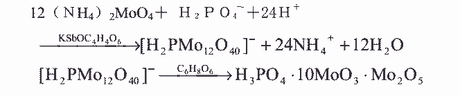

24.正磷酸盐含量的测定——钼酸铵分光度法
本方法适用于含 PO430.02~50mg/L 工业循环冷却水中磷含量的测定。
1. 原理
在酸性条件下，正磷酸盐与钼酸铵反应生成黄色的磷钼杂多酸，再用抗坏血酸还原成
磷钼蓝，于 710nm 最大吸收波长处分光光度法测定。
反应式为：

2．试剂
2.1 磷酸二氢钾;
2.2 硫酸:１+ １溶液；
2.3 抗坏血酸：２０/L；
称取 10g 抗坏血酸,精确至 0.5g,称取 0.2 乙二胺四乙酸二钠（C10H1408N2Na2·2H20）,
精确至 0.01g,溶于 200mL 水中,加入 8.0mL 甲酸,用水稀释至 500mL,混匀,贮存于棕色瓶中
(有效期一个月)。
2.4 钼酸铵:26g/L 溶液；
称取 13g 钼酸铵,精确至 0.5g，称取 0.5g 酒石酸锑钾(KSbOC4H4O6·1/2H20)精确至 0.01g,
溶于 200mL 水中,加入 230mL 硫酸 1+1 溶液,混匀,冷却后用水稀释至 500mL,混匀,贮存于棕
色瓶中(有效期二个月)。
2.5 磷标准溶液:1mL 含有 0.5mgPO43-
称取 0.7165g 预先在 100～105℃干燥并已恒重过的磷酸二氢钾,精确至 0.0002g,溶于约
500mL 水中,定量转移至 1L 容量瓶,用水稀释至刻度,摇匀。
2.6 磷标准溶液:1mL 含有 0.02mgPO43-
取 20.00mL 磷酸标准溶液(2.5)于 500mL 容量瓶中,用水稀释至刻度,摇匀。
３．仪器
分光光度计:带有厚度为 1cm 的吸收池。
４．分析步骤
4.1 工作曲线的绘制
分别取 0(空白)、1.0、2.0、3.0、4.0、5.0、6.0、7.0、8.0mL 磷标准溶液(2.6)于 9
个 50mL 容量瓶中,依次向各瓶中加入约 25mL 水，2.0mL 钼酸铵溶液,3.0mL 抗坏血酸溶液,
用水稀释至刻度,摇匀,室温下放置 10 分钟。在分光光度计 710nm 处,用 1cm 吸收池,以空白
调零测吸光度。以测得的吸光度为纵坐标,相对应的 PO43‐量(ug)为横坐标绘制工作曲线。
4.2 试样的制备
现场取约 250mL 实验室样品经中速滤纸过滤后贮于 500mL 烧杯中即制成试样。
4.3 正磷酸盐含量的测定
从试样中取 20.0mL 试验溶液,于 50mL 容量瓶中,加入 2.0mL 钼酸铵溶液,3.0mL 抗坏血
酸溶液,用水稀释至刻度,摇匀,室温下放置 10 分钟,在分光光度计 710nm 处,用 1cm 吸收池,
以不加试验溶液的空白调零测吸光度。
５．分析结果的计算
以 mg/L 表示的试样中正磷酸盐(以 PO43–计)含量(X1),按下式计算:
式中:m1——从工作曲线上查得的以μg 表示的 PO43‐量；
Ｖ１——移取试验溶液的体积，mL。
所得结果应表示至二位小数。
6．允许差
两次平行测定结果之差不大于 0.30mg/L,取算术平均值为测定结果。